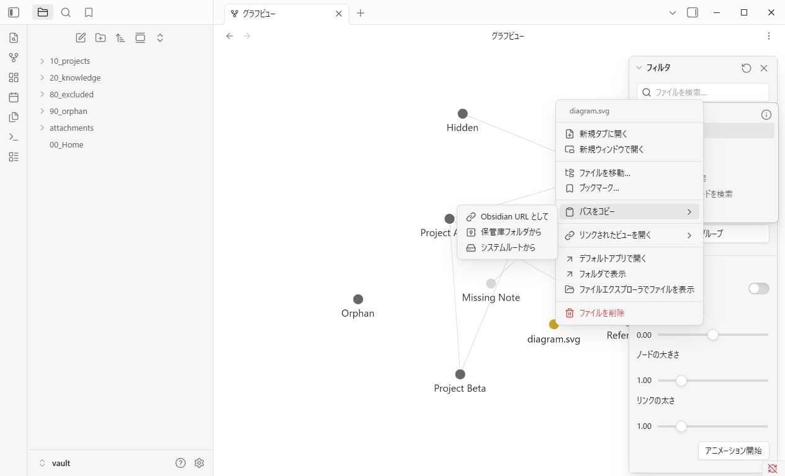
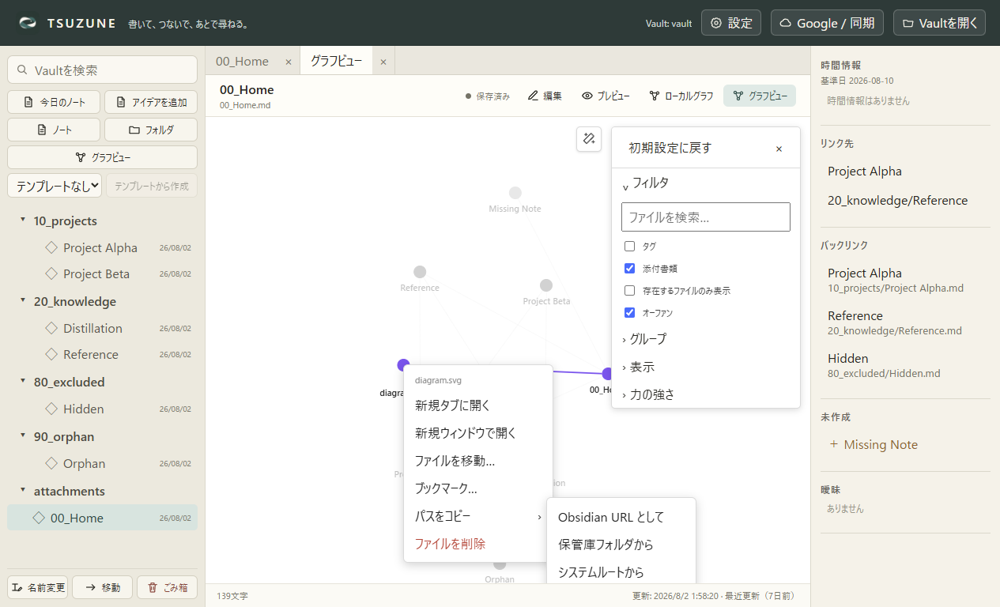
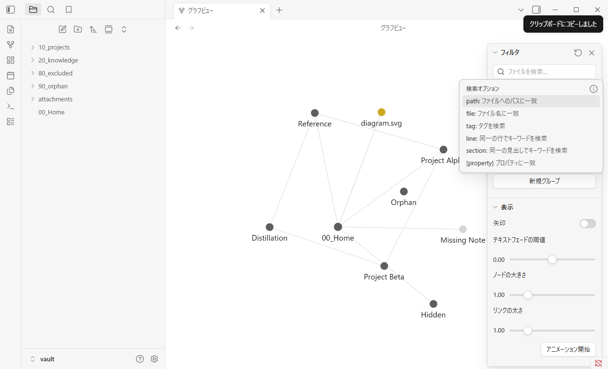
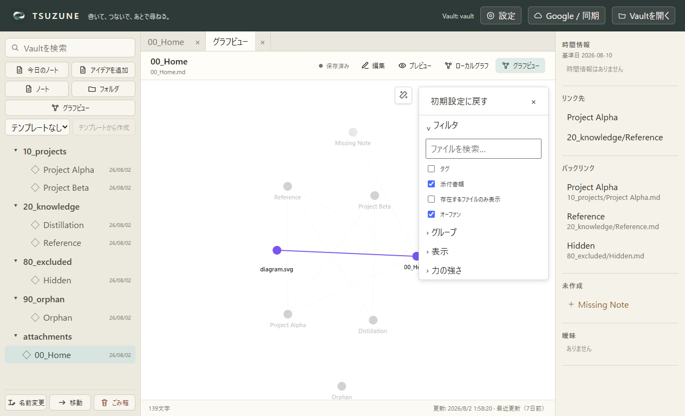
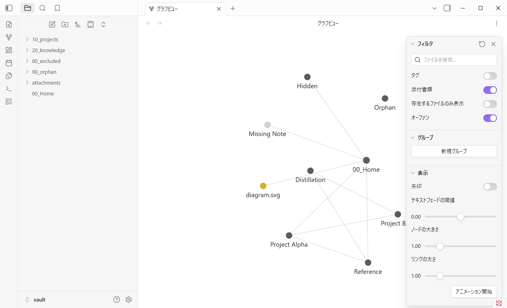
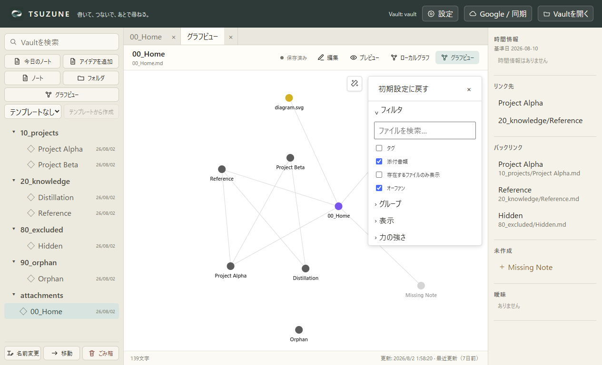

TSUZUNE × Obsidian 1.13.4 · GP0-3b-l
3つのpath copyを、
同じ文字列契約へ。
Obsidian URL、Vault相対path、Windows絶対pathを、同じfixtureの添付nodeからコピーした。menu、Graph検索条件・node集合、Vault内容、再表示、別process再起動、clipboard隔離までを3シナリオで固定した。
matched core behavior · evidence boundaries retained
比較結果
| 契約 | Obsidian | TSUZUNE | 判定 |
|---|---|---|---|
| 「パスをコピー」は「ブックマーク…」の直後にあり、有効である | true | true | matched |
| 3形式の文言・順序・有効状態 | Obsidian URL として / 保管庫フォルダから / システムルートから | Obsidian URL として / 保管庫フォルダから / システムルートから | matched |
| Obsidian URL として | obsidian://open?vault=vault&file=attachments%2Fdiagram.svg | obsidian://open?vault=vault&file=attachments%2Fdiagram.svg | matched |
| 保管庫フォルダから | attachments/diagram.svg | attachments/diagram.svg | matched |
| システムルートから | <OBSIDIAN_VAULT_ROOT>\attachments\diagram.svg | <TSUZUNE_VAULT_ROOT>\attachments\diagram.svg | matched-semantic |
| 1回のplain-text write、選択後menu close、利用者clipboard隔離・hook復元 | true | true | matched |
| Graph検索条件・node集合・Vault内容をGraph再表示・別プロセス再起動まで保持 | true | true | matched |
| 観測した配置でsubmenuがviewport内に収まる | right-edge reference: opens left (visual evidence) | center capture: opens right and stays inside viewport (measured bounds) | partial-evidence |
| 添付nodeの右クリックmenu行数 | 11 | 6 | known-ui-gap |
3形式のsubmenu: 各観測位置でviewport内に表示


選択後: menuを閉じてGlobal Graphを保持


別process再起動後: Graphと対象nodeを保持


残る差と境界
対象のpath-copy中核挙動は一致した。添付context menu全体はObsidian 11行に対してTSUZUNE 6行であり、OS clipboardへの実writeは安全のため両captureともinterceptした。
- physical OS clipboardへのwriteと別applicationへのpaste roundtrip
- 物理mouse／keyboard、touch／pen、screen reader、Windows High Contrast、複数DPI
- TSUZUNE実画面を右端へ置いたときの左開き。renderer回帰testはあるが、この固定captureでは未観測
- pixel-identicalなmenu／submenu描画とForce配置
- non-empty Graph queryでのpath-copy command固有capture
- unresolved node、tag node、folder-only target、.mdと.svg以外の実file extension
- 添付context menuの残る5操作とmenu全体の一致
次: GP0-3b-m リンクされたビューを開く
結論
GP0-3b-lでは3形式のpath copy、menu lifecycle、共通検証範囲であるGraph query・node集合・Vault内容の再表示／別プロセス再起動までの保持、各観測位置でviewport内に収まるsubmenu配置をmatched-core-behaviorと判定した。固定参照は右端から左、TSUZUNE captureは中央から右へ開いており、同じgeometryは証明していない。OS clipboard roundtrip、全node種別、menu全体、pixel equivalenceも未証明であり、Graph parity全体の完了は主張しない。
Machine-readable source: assets/graph-gp0-attachment-path-copy/comparison.json